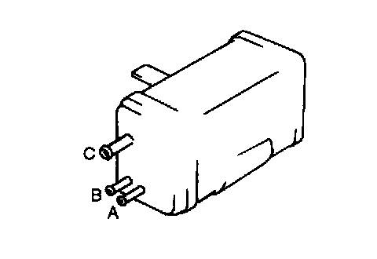

Evaporative Emission Control Canister: Testing and Inspection
CHARCOAL CANISTER INSPECTION1. Remove the charcoal canister. (Refer to FUEL TANK REMOVAL/INSTALLATION.)

2. Plug ports A and B, then blow air into port C.
3. Verify that there is no air leakage.
4. If not as specified, replace the charcoal canister.